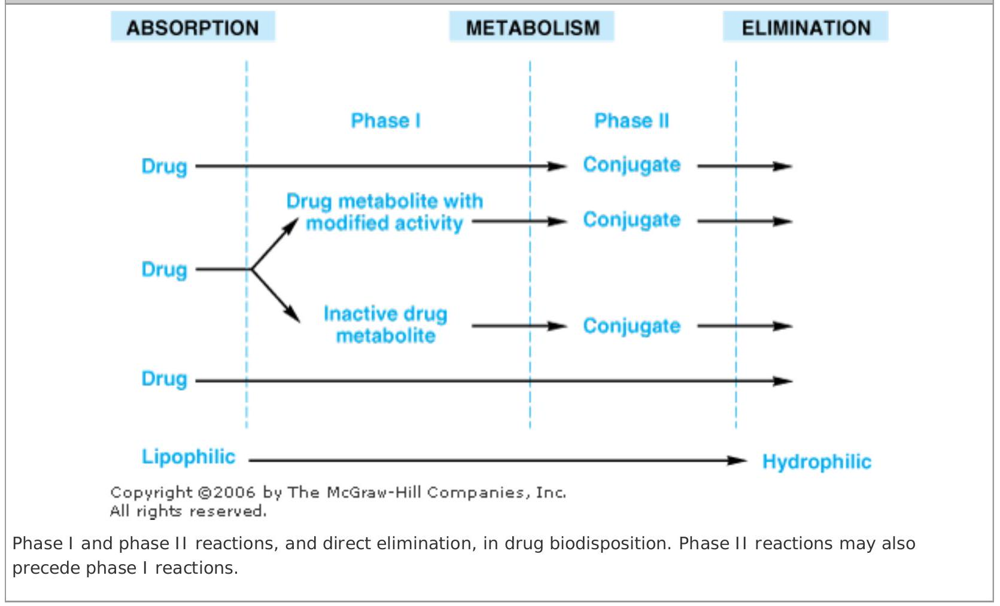
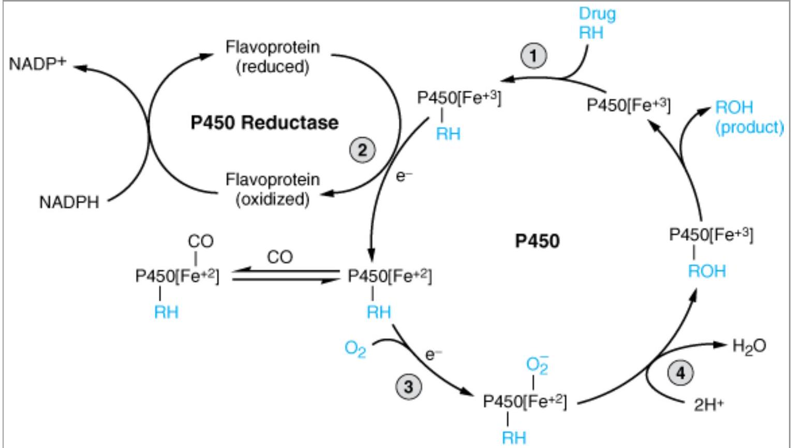
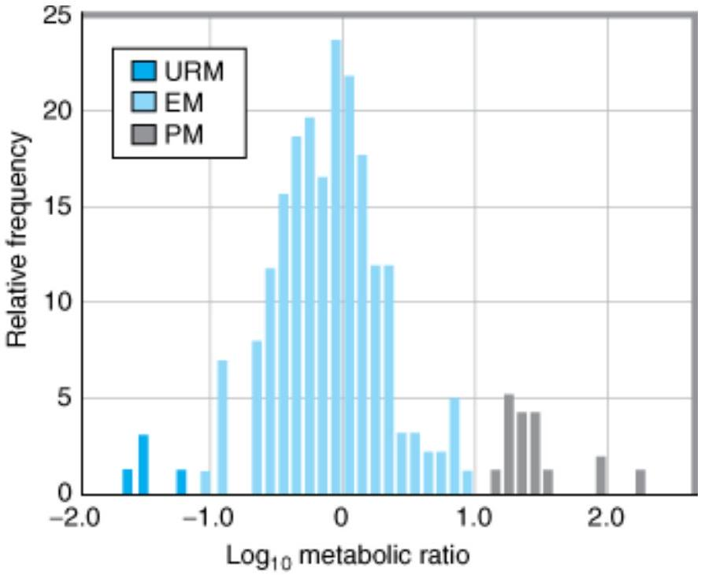

DRUG BIOTRANSFORMATION
Humans are exposed daily to a wide variety of foreign compounds called xenobiotics—substances absorbed across the lungs or skin or, more commonly, ingested either unintentionally as compounds present in food and drink or deliberately as drugs for therapeutic or "recreational" purposes. Exposure to environmental xenobiotics may be inadvertent and accidental or—when they are present as components of air, water, and food—inescapable. Some xenobiotics are innocuous, but many can provoke biologic responses. Such biologic responses often depend on conversion of the absorbed substance into an active metabolite. The discussion that follows is applicable to xenobiotics in general (including drugs) and to some extent to endogenous compounds.
WHY IS DRUG BIOTRANSFORMATI ON NECESSARY?
Renal excretion plays a pivotal role in terminating the biologic activity of some drugs, particularly those that have small molecular volumes or possess polar characteristics such as functional groups that are fully ionized at physiologic pH. However, many drugs do not possess such physicochemical properties. Pharmacologically active organic molecules tend to be lipophilic and remain un-ionized or only partially ionized at physiologic pH ; these are readily reabsorbed from the glomerular filtrate in the nephron. Certain lipophilic compounds are often strongly bound to plasma proteins and may not be readily filtered at the glomerulus. Consequently, most drugs would have a prolonged duration of action if termination of their action depended solely on renal excretion.
An alternative process that can lead to the termination or alteration of biologic activity is metabolism. In general, lipophilic xenobiotics are transformed to more polar and hence more readily excreted products. The role metabolism plays in the inactivation of lipid-soluble drugs can be quite dramatic. For example, lipophilic barbiturates such as thiopental and pentobarbital would have extremely long halflives if it were not for their metabolic conversion to more water-soluble compounds.
Metabolic products are often less pharmacodynamically active than the parent drug and may even be inactive. However, some biotransformation products have enhanced activity or toxic properties. It is noteworthy that the synthesis of endogenous substrates such as steroid hormones, cholesterol, active vitamin D congeners, and bile acids involves many pathways catalyzed by enzymes associated with the metabolism of xenobiotics. Finally, drug-metabolizing enzymes have been exploited in the design of pharmacologically inactive prodrugs that are converted to active molecules in the body.
THE ROLE OF BIOTRANSFORMATION IN DRUG DISPOSITION
Most metabolic biotransformations occur at some point between absorption of the drug into the general circulation and its renal elimination. A few transformations occur in the intestinal lumen or intestinal wall. In general, all of these reactions can be assigned to one of two major categories called phase I and phase II reactions (Figure 4-1).
Phase I reactions usually convert the parent drug to a more polar metabolite by introducing or unmasking a functional group ( $-\mathrm{OH},-\mathrm{NH}_{2},-\mathrm{SH}$ ). Often these metabolites are inactive, although in some instances activity is only modified or even enhanced.
If phase I metabolites are sufficiently polar, they may be readily excreted. However, many phase I products are not eliminated rapidly and undergo a subsequent reaction in which an endogenous substrate such as glucuronic acid, sulfuric acid, acetic acid, or an amino acid combines with the newly incorporated functional group to form a highly polar conjugate. Such conjugation or synthetic reactions are the hallmarks of phase II metabolism. A great variety of drugs undergo these sequential biotransformation reactions, although in some instances the parent drug may already possess a functional group that may form a conjugate directly. For example, the hydrazide moiety of isoniazid is known to form an N -acetyl conjugate in a phase II reaction. This conjugate is then a substrate for a phase I type reaction, namely, hydrolysis to isonicotinic acid (Figure 4-2). Thus, phase II reactions may actually precede phase I reactions.
![Figure 4-2. Phase II activation of isoniazid (INH) to a hepatotoxic metabolite. Chemical reaction scheme showing Isoniazid (INH) undergoing N-acetylation (Phase II reaction) catalyzed by N-acetyltransferase to form Acetyl isoniazid. Acetyl isoniazid then undergoes hydrolysis (Phase I reaction) catalyzed by Amidases/Hydrolases to form Isonicotinic acid and Acetylhydrazine. Acetylhydrazine undergoes acetylation catalyzed by N-acetyltransferase to form Diacetylhydrazine, which is non-toxic. Acetylhydrazine can also undergo Oxidation catalyzed by CYP2E1 to form a reactive species which is hepatotoxic.](../assets/images/2025_05_20_5077f6d5de5c97219fafg-0106-1.jpg)
Copyright ©2006 by The McGraw-Hill Companies, Inc. All rights reserved.
Phase II activation of isoniazid (INH) to a hepatotoxic metabolite.
WHERE DO DRUG BIOTRANSFORMATI ONS OCCUR?
Although every tissue has some ability to metabolize drugs, the liver is the principal organ of drug metabolism. Other tissues that display considerable activity include the gastrointestinal tract, the lungs, the skin, and the kidneys. Following oral administration, many drugs (eg, isoproterenol, meperidine, pentazocine, morphine) are absorbed intact from the small intestine and transported first via the portal system to the liver, where they undergo extensive metabolism. This process is called the first-pass effect (see Chapter 3). Some orally administered drugs (eg, clonazepam, chlorpromazine, cyclosporine) are more extensively metabolized in the intestine than in the liver, whereas others (eg, midazolam) undergo significant ( 50% ) intestinal metabolism. Thus, intestinal metabolism can contribute to the overall first-pass effect, and individuals with compromised liver function may increasingly rely on such intestinal metabolism for drug elimination. First-pass effects may so greatly limit the bioavailability of orally administered drugs (eg, lidocaine) that alternative routes of administration must be used to achieve therapeutically effective blood levels. Furthermore, the lower gut harbors intestinal microorganisms that are capable of many biotransformation reactions. In addition, drugs may be metabolized by gastric acid (eg, penicillin), by digestive enzymes (eg, polypeptides such as insulin), or by enzymes in the wall of the intestine (eg, sympathomimetic catecholamines).
Although drug biotransformation in vivo can occur by spontaneous, noncatalyzed chemical reactions, the vast majority of transformations are catalyzed by specific cellular enzymes. At the subcellular level, these enzymes may be located in the endoplasmic reticulum (ER), mitochondria, cytosol, lysosomes, or even the nuclear envelope or plasma membrane.
MI CROSOMAL MI XED FUNCTI ON OXI DASE SYSTEM & PHASE I REACTI ONS
Many drug-metabolizing enzymes are located in the lipophilic ER membranes of the liver and other tissues. When these lamellar membranes are isolated by homogenization and fractionation of the cell, they re-form into vesicles called microsomes. Microsomes retain most of the morphologic and functional characteristics of the intact membranes, including the rough and smooth surface features of the rough (ribosome-studded) and smooth (no ribosomes) ER. Whereas the rough microsomes tend to be dedicated to protein synthesis, the smooth microsomes are relatively rich in enzymes responsible for oxidative drug metabolism. In particular, they contain the important class of enzymes known as the mixed function oxidases (MFOs), or monooxygenases. The activity of these enzymes requires both a reducing agent (nicotinamide adenine dinucleotide phosphate [NADPH]) and molecular oxygen; in a typical reaction, one molecule of oxygen is consumed (reduced) per substrate molecule, with one oxygen atom appearing in the product and the other in the form of water.
In this oxidation-reduction process, two microsomal enzymes play a key role. The first of these is a flavoprotein, NADPH-cytochrome P450 reductase. One mole of this enzyme contains 1 mol each of flavin mononucleotide (FMN) and flavin adenine dinucleotide (FAD). The second microsomal enzyme is a hemoprotein called cytochrome P450, which serves as the terminal oxidase. In fact, the microsomal membrane harbors multiple forms of this hemoprotein, and this multiplicity is increased by repeated administration of exogenous chemicals (see below). The name cytochrome P450 (abbreviated as CYP or P450) is derived from the spectral properties of this hemoprotein. In its reduced (ferrous) form, it binds carbon monoxide to give a complex that absorbs light maximally at 450 nm . The relative abundance of P450s, compared with that of the reductase in the liver, contributes to making P450 heme reduction a rate-limiting step in hepatic drug oxidations.
Microsomal drug oxidations require P450, P450 reductase, NADPH, and molecular oxygen. A simplified scheme of the oxidative cycle is presented in Figure 4-3. Briefly, oxidized ( $\mathrm{Fe}^{3+}$ ) P450 combines with a drug substrate to form a binary complex (step 1). NADPH donates an electron to the flavoprotein P450 reductase, which in turn reduces the oxidized P450-drug complex (step 2). A second electron is introduced from NADPH via the same P450 reductase, which serves to reduce molecular oxygen and to form an "activated oxygen"—P450-substrate complex (step 3). This complex in turn transfers activated oxygen to the drug substrate to form the oxidized product (step 4).
Copyright ©2006 by The McGraw-Hill Companies, Inc. All rights reserved.
Cytochrome P450 cycle in drug oxidations. (RH, parent drug; ROH, oxidized metabolite; $\mathrm{e}^{-}$, electron.)
The potent oxidizing properties of this activated oxygen permit oxidation of a large number of substrates. Substrate specificity is very low for this enzyme complex. High lipid solubility is the only common structural feature of the wide variety of structurally unrelated drugs and chemicals that serve as substrates in this system (Table 4-1).
| Reaction Class | Structural Change | Drug Substrates |
|---|---|---|
| Oxidations | ||
| Cytochrome P450-dependent oxidations: | ||
| Aromatic hydroxylations | Acetanilide, propranolol, phenobarbital, phenytoin, phenylbutazone, amphetamine, warfarin, 17a-ethinyl estradiol, naphthalene, benzpyrene | |
| Aliphatic hydroxylations | $\mathrm{RCH}_{2} \mathrm{CH}_{3} \rightarrow \mathrm{RCH}_{2} \mathrm{CH}_{2} \mathrm{OH}$ | Amobarbital, pentobarbital, secobarbital, chlorpropamide, ibuprofen, meprobamate, glutethimide, phenylbutazone, digitoxin |
| Epoxidation |
|
Aldrin |
| Oxidative dealkylation | $\mathrm{RNHCH}_{3} \rightarrow \mathrm{RNH}_{2}+\mathrm{CH}_{2} \mathrm{O}$ | Morphine, ethylmorphine, benzphetamine, aminopyrine, caffeine, theophylline |
| O-Dealkylation | $\mathrm{ROCH}_{3} \rightarrow \mathrm{ROH}+\mathrm{CH}_{2} \mathrm{O}$ | Codeine, p-nitroanisole |
| S-Dealkylation | $\mathrm{RSCH}_{3} \rightarrow \mathrm{RSH}+\mathrm{CH}_{2} \mathrm{O}$ | 6-Methylthiopurine, methitural |
| N -Oxidation | $\mathrm{RNH}_{2} \rightarrow \mathrm{RNHOH}$ | |
| Primary amines | Aniline, chlorphentermine | |
| Secondary amines |
|
2-Acetylaminofluorene, acetaminophen |
| Reaction Class | Structural Change | Drug Substrates |
| Tertiary amines |  | Nicotine, methaqualone |
| S-Oxidation |  | Thioridazine, cimetidine, chlorpromazine |
| Deamination |  | Amphetamine, diazepam |
| Desulfuration |  | Thiopental |
|  | Parathion | |
| Dechlorination | $\mathrm{CCl}_{4} \rightarrow\left[\mathrm{CCl}_{3}{ }^{+}\right] \rightarrow \mathrm{CHCl}_{3}$ | Carbon tetrachloride |
| Cytochrome P450-independent oxidations: | ||
| Flavin monooxygenase (Ziegler's enzyme) | $$\mathrm{R}_{3} \mathrm{~N} \longrightarrow \mathrm{R}_{3} \mathrm{~N}^{+} \rightarrow \mathrm{O}^{-} \xrightarrow{\mathrm{H}^{+}} \mathrm{R}_{3} \mathrm{~N}^{+} \mathrm{OH}$$ | Chlorpromazine, amitriptyline, benzphetamine |
| Amine oxidases | $\mathrm{RCH}_{2} \mathrm{NH}_{2} \rightarrow \mathrm{RCHO}+\mathrm{NH}_{3}$ | Phenylethylamine, epinephrine |
| Dehydrogenations | $\mathrm{RCH}_{2} \mathrm{OH} \rightarrow \mathrm{RCHO}$ | Ethanol |
| Reductions | ||
| Azo reductions | $\mathrm{RN}=\mathrm{NR}_{1} \rightarrow \mathrm{RNH}-\mathrm{NHR}_{1} \rightarrow \mathrm{RNH}_{2}+\mathrm{R}_{1} \mathrm{NH}_{2}$ | Prontosil, tartrazine |
| Nitro reductions | $\mathrm{RNO}_{2} \rightarrow \mathrm{RNO} \rightarrow \mathrm{RNHOH} \rightarrow \mathrm{RNH}_{2}$ | Nitrobenzene, chloramphenicol, clonazepam, dantrolene |
| Carbonyl reductions |
|
Metyrapone, methadone, naloxone |
| Hydrolyses | ||
| Esters | $\mathrm{R}_{1} \mathrm{COOR}_{2} \rightarrow \mathrm{R}_{1} \mathrm{COOH}+\mathrm{R}_{2} \mathrm{OH}$ | Procaine, succinylcholine, aspirin, clofibrate, methylphenidate |
| Amides | $\mathrm{RCONHR}_{1} \rightarrow \mathrm{RCOOH}+\mathrm{R}_{1} \mathrm{NH}_{2}$ | Procainamide, lidocaine, indomethacin |
Human Liver P450 Enzymes
Immunoblotting analyses, combined with the use of relatively selective functional markers and selective P450 inhibitors, have identified numerous P450 isoforms (CYP: 1A2, 2A6, 2B6, 2C8, 2C9, 2C18, 2C19, 2D6, 2E1, 3A4, 3A5, 4A11, and 7) in human liver microsomal preparations. Of these, CYP1A2, CYP2A6, CYP2C9, CYP2D6, CYP2E1, and CYP3A4 appear to be the most important forms, accounting for approximately, 15%, 4%, 20%, 5%, 10%, and 30%, respectively, of the total human liver P450 content. Together, they are responsible for catalyzing the bulk of the hepatic drug and xenobiotic metabolism (Table 4-2).
| CYP | Substrates | Inducers | Inhibitors |
|---|---|---|---|
| 1A2 | Acetaminophen, antipyrine, caffeine, clomipramine, phenacetin, tacrine, tamoxifen, theophylline, warfarin | Smoking, charcoalbroiled foods, cruciferous vegetables, omeprazole | Galangin, furafylline, fluvoxamine |
| 2A6 | Coumarin, tobacco nitrosamines, nicotine (to cotinine and 2'-hydroxynicotine) | Rifampin, phenobarbital | Tranylcypromine, menthofuran, methoxsalen |
| 2B6 | Artemisinin, bupropion, S-mephobarbital, cyclophosphamide, S-mephenytoin (Ndemethylation to nirvanol), propofol, selegiline, sertraline | Phenobarbital, cyclophosphamide | Ticlopidine, clopidogrel |
| 2C8 | Taxol, all-trans-retinoic acid | Rifampin, barbiturates | Trimethoprim |
| 2C9 | Celecoxib, flurbiprofen, hexobarbital, ibuprofen, losartan, phenytoin, tolbutamide, trimethadione, sulfaphenazole, S-warfarin, ticrynafen | Barbiturates, rifampin | Tienilic acid, sulfaphenazole |
| 2C18 | Tolbutamide | Phenobarbital | |
| 2C19 | Diazepam, S-mephenytoin, naproxen, nirvanol, omeprazole, propranolol | Barbiturates, rifampin | N3-benzyInirvanol, N3benzylphenobarbital, fluconazole |
| 2D6 | Bufuralol, bupranolol, clomipramine, clozapine, codeine, debrisoquin, dextromethorphan, encainide, flecainide, fluoxetine, guanoxan, haloperidol, hydrocodone, 4-methoxy-amphetamine, metoprolol, mexiletine, oxycodone, paroxetine, phenformin, propafenone, propoxyphene, risperidone, selegiline | St. John's wort, rifampin | Quinidine, paroxetine |
(deprenyl), sparteine, thioridazine, timolol, tricyclic antidepressants CYP Substrates Inducers Inhibitors 2E1 Acetaminophen, chlorzoxazone, enflurane, halothane, ethanol (a minor pathway) Ethanol, isoniazid 4-Methylpyrazole, disulfiram 3A4 ${ }^{1}$ Acetaminophen, alfentanil, amiodarone, astemizole, cisapride, cocaine, cortisol, cyclosporine, dapsone, diazepam, dihydroergotamine, dihydropyridines, diltiazem, erythromycin, ethinyl estradiol, gestodene, indinavir, lidocaine, lovastatin, macrolides, methadone, miconazole, midazolam, mifepristone (RU 486), nifedipine, paclitaxel, progesterone, quinidine, rapamycin, ritonavir, saquinavir, spironolactone, sulfamethoxazole, sufentanil, tacrolimus, tamoxifen, terfenadine, testosterone, tetrahydrocannabinol, triazolam, troleandomycin, verapamil Barbiturates, carbamazepine, glucocorticoids, macrolide antibiotics, pioglitazone, phenytoin, rifampin Azamulin, diltiazam, erythromycin, fluconazole, grapefruit juice (furanocoumarins), itraconazole, ketoconazole, ritonavir, troleandomycin ${}^{1}$ CYP3A5 has similar substrate and inhibitor profiles, but except for a few drugs is generally less active than CYP3A4.
It is noteworthy that CYP3A4 alone is responsible for the metabolism of over 50% of the clinically prescribed drugs metabolized by the liver. The involvement of individual P450s in the metabolism of a given drug may be screened in vitro by means of selective functional markers, selective chemical P450 inhibitors, and anti-P450 antibodies. In vivo, such screening may be accomplished by means of relatively selective noninvasive markers, which include breath tests or urinary analyses of specific metabolites after administration of a P450-selective substrate probe.
Enzyme I nduction
Some of the chemically dissimilar P450 substrate drugs, on repeated administration, induce P450 by enhancing the rate of its synthesis or reducing its rate of degradation (Table 4-2). Induction results in an acceleration of substrate metabolism and usually in a decrease in the pharmacologic action of the inducer and also of coadministered drugs. However, in the case of drugs metabolically transformed to reactive metabolites, enzyme induction may exacerbate metabolite-mediated toxicity.
Various substrates induce P450 isoforms having different molecular masses and exhibiting different substrate specificities and immunochemical and spectral characteristics.
Environmental pollutants are also capable of inducing P450 enzymes. As noted above, exposure to benzo[a]pyrene and other polycyclic aromatic hydrocarbons, which are present in tobacco smoke, charcoal-broiled meat, and other organic pyrolysis products, is known to induce CYP1A enzymes and to alter the rates of drug metabolism. Other environmental chemicals known to induce specific P450s include the polychlorinated biphenyls (PCBs), which were once used widely in industry as insulating materials and plasticizers, and 2,3,7,8-tetrachlorodibenzo-p-dioxin (dioxin, TCDD), a trace byproduct of the chemical synthesis of the defoliant 2,4,5-T (see Chapter 57).
Increased P450 synthesis requires enhanced transcription and translation. A cytoplasmic receptor (termed AhR) for polycyclic aromatic hydrocarbons (eg, benzo[a]pyrene, dioxin) has been identified, and the translocation of the inducer-receptor complex into the nucleus and subsequent activation of regulatory elements of genes have been documented. A pregnane X receptor (PXR), a member of the steroid-retinoid-thyroid hormone receptor family, has recently been shown to mediate CYP3A induction by various chemicals (dexamethasone, rifampin) in the liver and intestinal mucosa. A similar receptor, the constitutive androstane receptor (CAR) has been identified for the phenobarbital class of inducers.
P450 enzymes may also be induced by substrate stabilization, ie, decreased degradation, as is the case with troleandomycin—or clotrimazole-mediated induction of CYP3A enzymes and the ethanolmediated induction of CYP2E1.
Enzyme Inhibition
Certain drug substrates inhibit cytochrome P450 enzyme activity (Table 4-2). Imidazole-containing drugs such as cimetidine and ketoconazole bind tightly to the P450 heme iron and effectively reduce the metabolism of endogenous substrates (eg, testosterone) or other coadministered drugs through competitive inhibition. However, macrolide antibiotics such as troleandomycin, erythromycin, and erythromycin derivatives are metabolized, apparently by CYP3A, to metabolites that complex the cytochrome P450 heme-iron and render it catalytically inactive. Another compound that acts through this mechanism is the inhibitor proadifen (SKF-525-A, used in research), which binds tightly to the heme iron and quasi-irreversibly inactivates the enzyme, thereby inhibiting the metabolism of potential substrates.
Some substrates irreversibly inhibit P450s via covalent interaction of a metabolically generated reactive intermediate that may react with the P450 apoprotein or heme moiety or even cause the heme to fragment and irreversibly modify the apoprotein. The antibiotic chloramphenicol is metabolized by CYP2B1 to a species that modifies its protein and thus also inactivates the enzyme. A growing list of such suicide inhibitors—inactivators that attack the heme or the protein moiety—includes certain steroids (ethinyl estradiol, norethindrone, and spironolactone); fluroxene; allobarbital; the analgesic sedatives allylisopropylacetylurea, diethylpentenamide, and ethchlorvynol; carbon disulfide; grapefruit furanocoumarins; deprenyl; phencyclidine; ticlopidine and clopidogrel; ritonavir, and propylthiouracil. On the other hand, the barbiturate secobarbital is found to inactivate CYP2B1 by modification of both its heme and protein moieties. Other metabolically activated drugs whose P450 inactivation mechanism is not fully elucidated include mifepristone (RU-486), troglitazone, raloxifene, and tamoxifen.
PHASE II REACTIONS
Parent drugs or their phase I metabolites that contain suitable chemical groups often undergo coupling or conjugation reactions with an endogenous substance to yield drug conjugates (Table 4-3). In general, conjugates are polar molecules that are readily excreted and often inactive. Conjugate formation involves high-energy intermediates and specific transfer enzymes. Such enzymes (transferases) may be located in microsomes or in the cytosol. They catalyze the coupling of an activated endogenous substance (such as the uridine 5'-diphosphate [UDP] derivative of glucuronic acid) with a drug (or endogenous compound), or of an activated drug (such as the S-CoA derivative of benzoic acid) with an endogenous substrate. Because the endogenous substrates originate in the diet, nutrition plays a critical role in the regulation of drug conjugations.
| Type of Conjugation | Endogenous Reactant | Transferase (Location) | Types of Substrates | Examples |
|---|---|---|---|---|
| Glucuronidation | UDP glucuronic acid | UDP glucuronosyltransferase (microsomes) | Phenols, alcohols, carboxylic acids, hydroxylamines, sulfonamides | Nitrophenol, morphine, acetaminophen, diazepam, Nhydroxydapsone, sulfathiazole, meprobamate, digitoxin, digoxin |
| Acetylation | Acetyl-CoA | NAcetyltransferase (cytosol) | Amines | Sulfonamides, isoniazid, clonazepam, dapsone, mescaline |
| Glutathione conjugation | Glutathione (GSH) | GSH-S-transferase (cytosol, microsomes) | Epoxides, arene oxides, nitro groups, hydroxylamines | Acetminphen, ethacrynic acid, bromobenzene |
| Glycine conjugation | Glycine | Acyl-CoA glycinetransferase (mitochondria) | Acyl-CoA derivatives of carboxylic acids | Salicylic acid, benzoic acid, nicotinic acid, cinnamic acid, cholic acid, deoxycholic acid |
| Sulfation | Phosphoadenosyl phosphosulfate | Sulfotransferase (cytosol) | Phenols, alcohols, aromatic amines | Estrone, aniline, phenol, 3-hydroxycoumarin, acetaminophen, methyldopa |
| Methylation | S-Adenosylmethionine | Transmethylases (cytosol) | Catecholamines, phenols, amines | Dopamine, epinephrine, pyridine, histamine, thiouracil |
| Water conjugation | Water | Epoxide hydrolase (microsomes) | Arene oxides, cisdisubstituted and monosubstituted | Benzopyrene 7,8epoxide, styrene 1,2oxide, |
| Type of Conjugation | Endogenous Reactant | Transferase (Location) | Types of Substrates | Examples |
| (cytosol) | Alkene oxides, fatty acid epoxides | Leukotriene $\mathrm{A}_{4}$ |
Drug conjugations were once believed to represent terminal inactivation events and as such have been viewed as "true detoxification" reactions. However, this concept must be modified, because it is now known that certain conjugation reactions (acyl glucuronidation of nonsteroidal anti-inflammatory drugs, O-sulfation of N-hydroxyacetylaminofluorene, and N-acetylation of isoniazid) may lead to the formation of reactive species responsible for the toxicity of the drugs. Furthermore, sulfation is known to activate the orally active prodrug minoxidil into a very efficacious vasodilator and morphine-6-glucuronide is more potent than morphine itself.
METABOLI SM OF DRUGS TO TOXI C PRODUCTS
Metabolism of drugs and other foreign chemicals may not always be an innocuous biochemical event leading to detoxification and elimination of the compound. Indeed, as noted above, several compounds have been shown to be metabolically transformed to reactive intermediates that are toxic to various organs. Such toxic reactions may not be apparent at low levels of exposure to parent compounds when alternative detoxification mechanisms are not yet overwhelmed or compromised and the availability of endogenous detoxifying cosubstrates (glutathione [GSH], glucuronic acid, sulfate) is not limited. However, when these resources are exhausted, the toxic pathway may prevail, resulting in overt organ toxicity or carcinogenesis. The number of specific examples of such drug-induced toxicity is expanding rapidly. An example is acetaminophen (paracetamol)—induced hepatotoxicity (Figure 4-4). This analgesic antipyretic drug is quite safe in therapeutic doses ( 1.2 g/d for an adult). It normally undergoes glucuronidation and sulfation to the corresponding conjugates, which together comprise 95% of the total excreted metabolites. The alternative P450-dependent GSH conjugation pathway accounts for the remaining 5%. When acetaminophen intake far exceeds therapeutic doses, the glucuronidation and sulfation pathways are saturated, and the P450-dependent pathway becomes increasingly important. Little or no hepatotoxicity results as long as GSH is available for conjugation. However, with time, hepatic GSH is depleted faster than it can be regenerated, and a reactive, toxic metabolite accumulates. In the absence of intracellular nucleophiles such as GSH, this reactive metabolite ( N -acetylbenzoiminoquinone) reacts with nucleophilic groups of cellular proteins, resulting in hepatotoxicity.
![Figure 4-4. Metabolism of acetaminophen (top center) to hepatotoxic metabolites. Chemical reaction scheme showing Acetaminophen undergoing Glucuronidation (Phase II) to form Acetaminophen glucuronide (non-toxic), and Sulfation (Phase II) to form Acetaminophen sulfate (non-toxic). Acetaminophen also undergoes Oxidation catalyzed by CYP2E1, 1A2, 3A4 (Phase I) to form NAPQI (Reactive Intermediate). NAPQI can undergo GSH conjugation catalyzed by GSH-S-transferase to form Mercapturate (non-toxic). If GSH is depleted, NAPQI binds to Cell macromolecules causing Hepatic cell death (toxic).](../assets/images/2025_05_20_5077f6d5de5c97219fafg-0117-1.jpg)
Copyright ©2006 by The McGraw-Hill Companies, Inc. All rights reserved.
Metabolism of acetaminophen (top center) to hepatotoxic metabolites. (GSH, glutathione; SG, glutathione moiety).
The chemical and toxicologic characterization of the electrophilic nature of the reactive acetaminophen metabolite has led to the development of effective antidotes—cysteamine and N -acetylcysteine. Administration of N -acetylcysteine (the safer of the two) within 8-16 hours following acetaminophen overdosage has been shown to protect victims from fulminant hepatotoxicity and death (see Chapter 59). Administration of GSH is not effective because it does not cross cell membranes readily.
CLI NI CAL RELEVANCE OF DRUG METABOLI SM
The dose and frequency of administration required to achieve effective therapeutic blood and tissue levels vary in different patients because of individual differences in drug distribution and rates of drug metabolism and elimination. These differences are determined by genetic factors and nongenetic variables such as age, sex, liver size, liver function, circadian rhythm, body temperature, and nutritional and environmental factors such as concomitant exposure to inducers or inhibitors of drug metabolism. The discussion that follows summarizes the most important of these variables.
Individual Differences
Individual differences in metabolic rate depend on the nature of the drug itself. Thus, within the same population, steady-state plasma levels may reflect a 30-fold variation in the metabolism of one drug and only a two-fold variation in the metabolism of another.
Genetic Factors
Genetic factors that influence enzyme levels account for some of these differences. Succinylcholine, for example, is metabolized only half as rapidly in persons with genetically determined defects in pseudocholinesterase as in persons with normally functioning pseudocholinesterase. Analogous pharmacogenetic differences are seen in the acetylation of isoniazid and the hydroxylation of warfarin. The defect in slow acetylators (of isoniazid and similar amines) appears to be caused by the synthesis of less of the enzyme rather than of an abnormal form of it. Inherited as an autosomal recessive trait, the slow acetylator phenotype occurs in about 50% of blacks and whites in the USA, more frequently in Europeans living in high northern latitudes, and much less commonly in Asians and Inuits (Eskimos). Similarly, genetically determined defects in the oxidative metabolism of debrisoquin, phenacetin, guanoxan, sparteine, phenformin, warfarin, and others have been reported (Table 4-4). The defects are apparently transmitted as autosomal recessive traits and may be expressed at any one of the multiple metabolic transformations that a chemical might undergo.
| Defect | Enzyme Involved | Drug and Therapeutic Use | Clinical Consequences ${}^{1}$ |
|---|---|---|---|
| Oxidation | CYP2D6 | Bufuralol (B-adrenoceptor blocker) | Exacerbation of B-blockade, nausea |
| Oxidation | CYP2D6 | Codeine (analgesic) | Reduced analgesia |
| Oxidation | CYP2D6 | Debrisoquin (antihypertensive) | Orthostatic hypotension |
| Oxidation | Aldehyde dehydrogenase | Ethanol (recreational drug) | Facial flushing, hypotension, tachycardia, nausea, vomiting |
| N-Acetylation | N-acetyl transferase | Hydralazine (antihypertensive) | Lupus erythematosus-like syndrome |
| N-Acetylation | N-acetyl transferase | Isoniazid (antitubercular) | Peripheral neuropathy |
| Oxidation | CYP2C19 | Mephenytoin (antiepileptic) | Overdose toxicity |
| S-Methylation | Thiopurine methyltransferase | Mercaptopurines (cancer chemotherapeutic) | Myelotoxicity |
| Oxidation | CYP2A6 | Nicotine (stimulant) | Lesser toxicity |
| Oxidation | CYP2D6 | Nortriptyline (antidepressant) | Toxicity |
| ODemethylation | CYP2C19 | Omeprazole (proton pump inhibitor) | Increased therapeutic efficacy |
| Oxidation | CYP2D6 | Sparteine | Oxytocic symptoms |
| Ester hydrolysis | Plasma cholinesterase | Succinylcholine (neuromuscular blocker) | Prolonged apnea |
| Oxidation | CYP2C9 | S-warfarin (anticoagulant) | Bleeding |
| Oxidation | CYP2C9 | Tolbutamide (hypoglycemic) | Cardiotoxicity |
${}^{1}$ Observed or predictable.
Of the several recognized genetic varieties of drug metabolism polymorphisms, three have been
particularly well characterized and afford some insight into possible underlying mechanisms. First is the debrisoquin-sparteine oxidation type of polymorphism, which apparently occurs in 3-10% of whites and is inherited as an autosomal recessive trait. In affected individuals, the CYP2D6-dependent oxidations of debrisoquin and other drugs (see Table 4-2; Figure 4-5) are impaired. These defects in oxidative drug metabolism are probably coinherited. The precise molecular basis for the defect appears to be faulty expression of the P450 protein, resulting in little or no isoform-catalyzed drug metabolism. More recently, however, another polymorphic genotype has been reported that results in ultrarapid metabolism of relevant drugs due to the presence of 2D6 allelic variants with up to 13 gene copies in tandem. This genotype is most common in Ethiopians and Saudi Arabians, populations that display it in up to one third of individuals. As a result, these subjects require twofold to threefold higher daily doses of nortriptyline (a 2D6 substrate) to achieve therapeutic plasma levels. Conversely, in these ultrarapidly metabolizing populations, the prodrug codeine (another 2D6 substrate) is metabolized much faster to morphine, often resulting in undesirable adverse effects of morphine, such as abdominal pain.
12.6, poor metabolizers). A smaller peak is also shown at very low MR values (<0.2, ultrarapid metabolizers). The distribution is bimodal with a long tail." class="content-image">Copyright ©2006 by The McGraw-Hill Companies, Inc. All rights reserved.
Genetic polymorphism in debrisoquin 4-hydroxylation by CYP2D6 in a Caucasian population. The semilog frequency distribution histogram of the metabolic ratio (MR; defined as percent of dose excreted as unchanged debrisoquin divided by the percent of dose excreted as 4-hydroxydebrisoquin metabolite) in the 8-hour urine collected after oral ingestion of 12.8 mg debrisoquin sulfate (equivalent to 10 mg free debrisoquin base). Individuals with MR values > 12.6 were phenotyped as poor metabolizers (PM, dark gray bars), and those with MR values < 12.6 but > 0.2 were designated extensive metabolizers (EM, light color bars). Those with MR values < 0.2 were designated as ultrarapid metabolizers (URM, dark color bars) based on the MR values (0.01-0.1) of individuals with documented multiple copies of CYP2D6 allelic variants resulting from inherited amplification of this gene. (Data from Woolhouse et al: Debrisoquin hydroxylation polymorphism among Ghanians and Caucasians. Clin Pharmacol Ther 1979; 26: 584.)
A second well-studied genetic drug polymorphism involves the stereoselective aromatic (4)- hydroxylation of the anticonvulsant mephenytoin, catalyzed by CYP2C19. This polymorphism, which is also inherited as an autosomal recessive trait, occurs in 3-5% of Caucasians and 18-23% of Japanese populations. It is genetically independent of the debrisoquin-sparteine polymorphism. In normal "extensive metabolizers," (S)-mephenytoin is extensively hydroxylated by CYP2C19 at the 4 position of the phenyl ring before its glucuronidation and rapid excretion in the urine, whereas (R)mephenytoin is slowly N-demethylated to nirvanol, an active metabolite. "Poor metabolizers," however, appear to totally lack the stereospecific (S)-mephenytoin hydroxylase activity, so both (S)- and (R)mephenytoin enantiomers are N-demethylated to nirvanol, which accumulates in much higher concentrations. Thus, poor metabolizers of mephenytoin show signs of profound sedation and ataxia after doses of the drug that are well tolerated by normal metabolizers. The molecular basis for this defect is a single base pair mutation in exon 5 of the CYP2C19 gene that creates an aberrant splice site, a correspondingly altered reading frame of the mRNA, and, finally, a truncated, nonfunctional protein. It is clinically important to recognize that the safety of a drug may be severely reduced in individuals who are poor metabolizers.
The third recently characterized genetic polymorphism is that of CYP2C9. Two well-characterized variants of this enzyme exist, each with amino acid mutations that result in altered metabolism. The CYP2C9*2 allele encodes an Arg144Cys mutation, exhibiting impaired functional interactions with P450 reductase. The other allelic variant, CYP2C9*3, encodes an enzyme with an Ile359Leu mutation that has lowered affinity for many substrates. For example, individuals displaying the CYP2C9*3 phenotype have greatly reduced tolerance for the anticoagulant warfarin. The warfarin clearance in CYP2C9*3-homozygous individuals is about 10% of normal values, and these people have a much lower tolerance for the drug than those who are homozygous for the normal wild-type allele. These individuals also have a much higher risk of adverse effects with warfarin (eg, bleeding) and with other CYP2C9 substrates such as phenytoin, losartan, tolbutamide, and some NSAIDs.
Allelic variants of CYP3A4 have also been reported but their contribution to its well-known interindividual variability in drug metabolism apparently is limited. On the other hand, the expression of CYP3A5, another human liver isoform, is markedly polymorphic, ranging from 0% to 100% of the total hepatic CYP3A content. This CYP3A5 protein polymorphism is now known to result from a single nucleotide polymorphism (SNP) within intron 3, which enables normally spliced CYP3A5 transcripts in 5% of Caucasians, 29% of Japanese, 27% of Chinese, 30% of Koreans, and 73% of African Americans. Thus, it can significantly contribute to interindividual differences in the metabolism of preferential CYP3A5 substrates such as midazolam.
Additional genetic polymorphisms in drug metabolism (eg, CYP2B6) that are inherited independently from those already described are being discovered. Studies of theophylline metabolism in monozygotic and dizygotic twins that included pedigree analysis of various families have revealed that a distinct polymorphism may exist for this drug and may be inherited as a recessive genetic trait. Genetic drug metabolism polymorphisms also appear to occur for aminopyrine and carbocysteine oxidations. Regularly updated information on human P450-polymorphisms is available at www.imm.ki.se/CYPalleles/.
Although genetic polymorphisms in drug oxidations often involve specific P450 enzymes, such genetic variations can also occur in other enzymes. Recent descriptions of a polymorphism in the oxidation of trimethylamine, believed to be metabolized largely by the flavin monooxygenase (Ziegler's enzyme), suggest that genetic variants of other non-P450-dependent oxidative enzymes may also contribute to such polymorphisms.
Diet & Environmental Factors
Diet and environmental factors contribute to individual variations in drug metabolism. Charcoal-broiled foods and cruciferous vegetables are known to induce CYP1A enzymes, whereas grapefruit juice is known to inhibit the CYP3A metabolism of coadministered drug substrates (Table 4-2). Cigarette smokers metabolize some drugs more rapidly than nonsmokers because of enzyme induction (see previous section). Industrial workers exposed to some pesticides metabolize certain drugs more rapidly than nonexposed individuals. Such differences make it difficult to determine effective and safe doses of drugs that have narrow therapeutic indices.
Age & Sex
Increased susceptibility to the pharmacologic or toxic activity of drugs has been reported in very young and very old patients compared with young adults (see Chapters 60 and 61). Although this may reflect differences in absorption, distribution, and elimination, differences in drug metabolism also play a role. Slower metabolism could be due to reduced activity of metabolic enzymes or reduced availability of essential endogenous cofactors.
Sex-dependent variations in drug metabolism have been well documented in rats but not in other rodents. Young adult male rats metabolize drugs much faster than mature female rats or prepubertal male rats. These differences in drug metabolism have been clearly associated with androgenic hormones. Clinical reports suggest that similar sex-dependent differences in drug metabolism also exist in humans for ethanol, propranolol, some benzodiazepines, estrogens, and salicylates.
Drug-Drug Interactions during Metabolism
Many substrates, by virtue of their relatively high lipophilicity, are retained not only at the active site of the enzyme but remain nonspecifically bound to the lipid ER membrane. In this state, they may induce microsomal enzymes, particularly after repeated use. Acutely, depending on the residual drug levels at the active site, they also may competitively inhibit metabolism of a simultaneously administered drug.
Enzyme-inducing drugs include various sedative-hypnotics, antipsychotics, anticonvulsants, the antitubercular drug rifampin, and insecticides (Table 4-5). Patients who routinely ingest barbiturates, other sedative-hypnotics, or certain antipsychotic drugs may require considerably higher doses of warfarin to maintain a therapeutic effect. On the other hand, discontinuance of the sedative inducer may result in reduced metabolism of the anticoagulant and bleeding—a toxic effect of the ensuing enhanced plasma levels of the anticoagulant. Similar interactions have been observed in individuals receiving various combinations of drug regimens such as rifampin, antipsychotics, or sedatives with contraceptive agents, sedatives with anticonvulsant drugs, and even alcohol with hypoglycemic drugs (tolbutamide).
| Inducer | Drug Whose Metabolism Is Enhanced |
|---|---|
| Benzo[a]pyrene | Theophylline |
| Carbamazepine | Carbamazepine, clonazepam, itraconazole |
| Chlorcyclizine | Steroid hormones |
| Ethchlorvynol | Warfarin |
| Glutethimide | Antipyrine, glutethimide, warfarin |
| Griseofulvin | Warfarin |
| Phenobarbital and other barbiturates ${}^{1}$ | Barbiturates, chloramphenicol, chlorpromazine, cortisol, coumarin anticoagulants, desmethylimipramine, digitoxin, doxorubicin, estradiol, itraconazole, phenylbutazone, phenytoin, quinine, testosterone |
| Phenylbutazone | Aminopyrine, cortisol, digitoxin |
| Phenytoin | Cortisol, dexamethasone, digitoxin, itraconazole, theophylline |
| Rifampin | Coumarin anticoagulants, digitoxin, glucocorticoids, itraconazole, methadone, metoprolol, oral contraceptives, prednisone, propranolol, quinidine, saquinavir |
| Ritonavir ${}^{2}$ | Midazolam |
| St. John's wort | Alprazolam, cyclosporine, digoxin, indinavir, oral contraceptives, ritonavir, simvastatin, tacrolimus, warfarin |
${}^{1}$ Secobarbital is an exception. See Table 4-6 and text.
${}^{2}$ With chronic (repeated) administration; acutely, ritonavir is a potent CYP3A4 inhibitor/inactivator.
It must also be noted that an inducer may enhance not only the metabolism of other drugs but also its own metabolism. Thus, continued use of some drugs may result in a pharmacokinetic type of tolerance—progressively reduced therapeutic effectiveness due to enhancement of their own metabolism.
Conversely, simultaneous administration of two or more drugs may result in impaired elimination of the more slowly metabolized drug and prolongation or potentiation of its pharmacologic effects (Table 4-6). Both competitive substrate inhibition and irreversible substrate-mediated enzyme inactivation may augment plasma drug levels and lead to toxic effects from drugs with narrow therapeutic indices. Indeed, such acute interactions of terfenadine (a second-generation antihistamine) with a CYP3A4 substrate-inhibitor (ketoconazole, erythromycin, or grapefruit juice) resulted in fatal cardiac arrhythmias (torsade de pointes) requiring its withdrawal from the market. Similar drug-drug interactions with CYP3A4 substrate-inhibitors (such as the antibiotics erythromycin and clarithromycin, the antidepressant nefazodone, the antifungals itraconazole and ketoconazole, and the HIV protease inhibitors indinavir and ritonavir), and consequent cardiotoxicity led to withdrawal or restricted use of the 5-HT${}_{4}$ agonist, cisapride. Similarly, allopurinol both prolongs the duration and enhances the chemotherapeutic and toxic actions of mercaptopurine by competitive inhibition of xanthine oxidase. Consequently, to avoid bone marrow toxicity, the dose of mercaptopurine must be reduced in patients receiving allopurinol. Cimetidine, a drug used in the treatment of peptic ulcer, has been shown to potentiate the pharmacologic actions of anticoagulants and sedatives. The metabolism of the sedative chlordiazepoxide has been shown to be inhibited by 63% after a single dose of cimetidine; such effects are reversed within 48 hours after withdrawal of cimetidine.
| Inhibitor ${}^{1}$ | Drug Whose Metabolism Is Inhibited |
|---|---|
| Allopurinol, chloramphenicol, isoniazid | Antipyrine, dicumarol, probenecid, tolbutamide |
| Chlorpromazine | Propranolol |
| Cimetidine | Chlordiazepoxide, diazepam, warfarin, others |
| Dicumarol | Phenytoin |
| Diethylpentenamide | Diethylpentenamide |
| Disulfiram | Antipyrine, ethanol, phenytoin, warfarin |
| Ethanol | Chlordiazepoxide (?), diazepam (?), methanol |
| Grapefruit juice ${}^{2}$ | Alprazolam, atorvastatin, cisapride, cyclosporine, midazolam, triazolam |
| Itraconazole | Alfentanil, alprazolam, astemizole, atorvastin, buspirone, cisapride, cyclosporine, delavirdine, diazepam, digoxin, felodipine, indinavir, loratidine, lovastatin, midazolam, nisoldipine, phenytoin, quinidine, ritonavir, saquinavir, sildenafil, simvastatin, sirolimus, tacrolimus, triazolam, verapamil, warfarin |
| Ketoconazole | Astemizole, cyclosporine, terfenadine |
| Nortriptyline | Antipyrine |
Impaired metabolism may also result if a simultaneously administered drug irreversibly inactivates a common metabolizing enzyme. These inhibitors, in the course of their metabolism by cytochrome P450, inactivate the enzyme and result in impairment of their own metabolism and that of other cosubstrates.
Interactions between Drugs & Endogenous Compounds
As noted previously, some drugs require conjugation with endogenous substrates such as glutathione, glucuronic acid, or sulfate for their inactivation. Consequently, different drugs may compete for the same endogenous substrates, and the faster-reacting drug may effectively deplete endogenous substrate levels and impair the metabolism of the slower-reacting drug. If the latter has a steep doseresponse curve or a narrow margin of safety, potentiation of its pharmacologic and toxic effects may result.
Diseases Affecting Drug Metabolism
Acute or chronic diseases that affect liver architecture or function markedly affect hepatic metabolism of some drugs. Such conditions include alcoholic hepatitis, active or inactive alcoholic cirrhosis, hemochromatosis, chronic active hepatitis, biliary cirrhosis, and acute viral or drug-induced hepatitis. Depending on their severity, these conditions may significantly impair hepatic drug-metabolizing enzymes, particularly microsomal oxidases, and thereby markedly affect drug elimination. For example, the half-lives of chlordiazepoxide and diazepam in patients with liver cirrhosis or acute viral hepatitis are greatly increased, with a corresponding prolongation of their effects. Consequently, these drugs may cause coma in patients with liver disease when given in ordinary doses.
Some drugs are metabolized so readily that even marked reduction in liver function does not significantly prolong their action. However, cardiac disease, by limiting blood flow to the liver, may impair disposition of those drugs whose metabolism is flow-limited (Table 4-7). These drugs are so readily metabolized by the liver that hepatic clearance is essentially equal to liver blood flow. Pulmonary disease may also affect drug metabolism as indicated by the impaired hydrolysis of procainamide and procaine in patients with chronic respiratory insufficiency and the increased half-life of antipyrine in patients with lung cancer. The impaired enzyme activity or defective formation of enzymes associated with heavy metal poisoning or porphyria also results in reduced hepatic drug metabolism.
| Alprenolol | Lidocaine |
|---|---|
| Amitriptyline | Meperidine |
| Clomethiazole | Morphine |
| Desipramine | Pentazocine |
| Imipramine | Propoxyphene |
| Isoniazid | Propranolol |
| Labetalol | Verapamil |
Although the effects of endocrine dysfunction on drug metabolism have been well explored in experimental animal models, corresponding data for humans with endocrine disorders are scanty. Thyroid dysfunction has been associated with altered metabolism of some drugs and of some endogenous compounds as well. Hypothyroidism increases the half-life of antipyrine, digoxin, methimazole, and some beta blockers, whereas hyperthyroidism has the opposite effect. A few clinical studies in diabetic patients indicate no apparent impairment of drug metabolism, although impairment has been noted in diabetic rats. Malfunctions of the pituitary, adrenal cortex, and gonads markedly reduce hepatic drug metabolism in rats. On the basis of these findings, it may be supposed that such disorders could significantly affect drug metabolism in humans. However, until sufficient evidence is obtained from clinical studies in patients, such extrapolations must be considered tentative.
REFERENCES
- Correia MA: Human and rat liver cytochromes P450: Functional markers, diagnostic inhibitor probes and parameters frequently used in P450 studies. In: Ortiz de Montellano P (editor). Cytochrome P450: Structure, Mechanism and Biochemistry, 3rd ed. Kluwer-Academic/Plenum Press, 2005.
- Correia MA, Ortiz de Montellano P: Inhibitors of cytochrome P-450 and possibilities for their therapeutic application. In: Ruckpaul K (editor): Frontiers in Biotransformation, vol 8. Taylor & Francis, 1993.
- Correia MA, Ortiz de Montellano P: Inhibition of cytochrome P450 enzymes. In: Ortiz de Montellano P (editor). Cytochrome P450: Structure, Mechanism and Biochemistry, 3rd ed. Kluwer-Academic/Plenum Press, 2005.
- Gonzalez F: The molecular biology of cytochrome P450s. Pharmacol Rev 1989; 40: 243.
- Guengerich FP: Human cytochrome P450 enzymes. In: Ortiz de Montellano P (editor). Cytochrome P450: Structure, Mechanism and Biochemistry, 3rd ed. Kluwer-Academic/Plenum Press, 2005.
- Guengerich FP: Role of cytochrome P450 enzymes in drug-drug interactions. Adv Pharmacol 1997; 43: 7. [PMID: 9342171]
- Hustert E et al: The genetic determinants of the CYP3A5 polymorphism. Pharmacogenetics 2001;11:773. [PMID: 11740341]
- Ingelman-Sundberg M: Pharmacogenetics: An opportunity for a safer and more efficient pharmacotherapy. J Intern Med 2001;250:186. [PMID: 11555122]
- Kroemer HK, Klotz U: Glucuronidation of drugs: A reevaluation of the pharmacological significance of the conjugates and modulating factors. Clin Pharmacokinet 1992;23:292. [PMID: 1395362]
- Meyer UA: Pharmacogenetics and adverse drug reactions. Lancet 2000; 356: 1667. [PMID: 11089838]
- Nelson DR et al: The P450 superfamily: Update on new sequences, gene mapping, accession numbers, and nomenclature. Pharmacogenetics 1996;6:1. [PMID: 8845856]
- Nelson DR et al: Updated human P450 sequences available at http://drnelson.utmem.edu/human.P450.seqs.html.
- Sueyoshi T, Negishi M: Phenobarbital response elements of cytochrome P450 genes and nuclear receptors. Annu Rev Pharmacol Toxicol 2001;41:123. [PMID: 11264453]
- Thummel KE, Wilkinson GR: In vitro and in vivo drug interactions involving human CYP3A. Annu Rev Pharmacol Toxicol 1998;38:389. [PMID: 9597161]
- Willson TM, Kliewer SA: PXR, CAR and drug metabolism. Nat Rev Drug Discov 2002; 1:259. [PMID: 12120277]
- Xu C et al: CYP2A6 genetic variation and potential consequences. Adv Drug Delivery Rev 2002;54:1245. [PMID: 12406643]